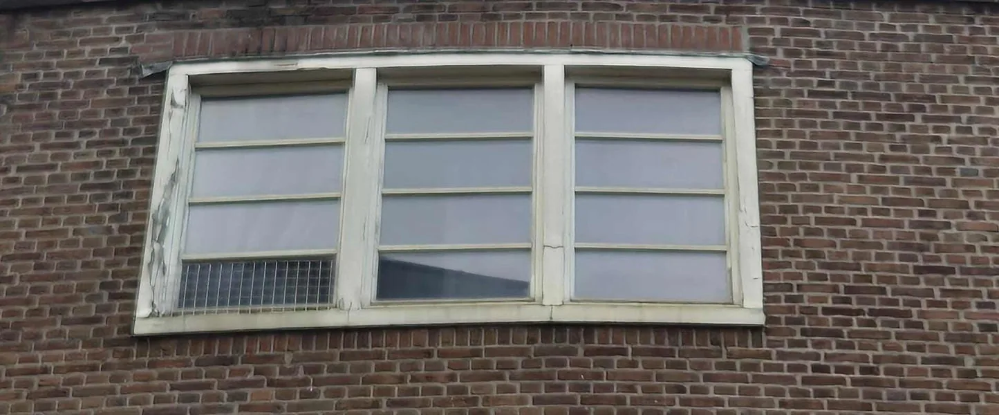
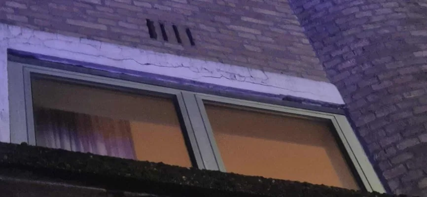
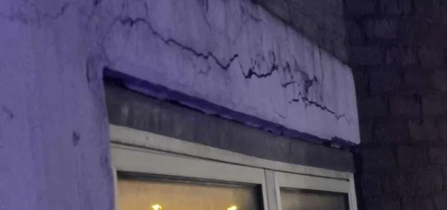

Kozijnlood vervangen
Kozijnlood voorkomt dat vocht uit de spouw schade aanricht aan uw kozijn of plafond, goed om tijdig te vervangen dus! Is uw kozijnlood nog in goede staat?
- ✓Diensten loodafwerkingen >
- ✓Kom in contact om de kosten in uw specifieke situatie te weten te komen!
- ✓Onze experts staan voor u klaar. Ontvang gratis advies of meer informatie over uw specifieke situatie!

Situaties uit de praktijk
Beelden van dakdetails, slijtage of werkzaamheden die passen bij dit onderwerp.


Wat u moet weten
Vocht in het plafond, langs het kozijn of tocht, het zijn allemaal indicatoren dat uw kozijnlood aan vervanging toe is. Het juiste moment om uw kozijnlood te vervangen is natuurlijk echter voordat er problemen ontstaan. Tijdig herkennen of uw kozijnlood aan vervanging toe is, kan echter het best door de dikte van het lood te meten. Kozijnlood dient altijd uitgevoerd te worden met minimaal 18-ponds bladlood, met een dikte van tenminste 1,59 mm, wanneer de helft van deze dikte bereikt is, dan adviseren wij kozijnlood te vervangen. Lees alles oer kozijnlood vervangen leest u op deze pagina, liever direct contact, klik op de button hieronder!
- ✓Diensten loodafwerkingen >
Wanneer kozijnlood vervangen?
Vocht in het plafond, langs het kozijn of tocht, het zijn allemaal indicatoren dat uw kozijnlood aan vervanging toe is. Het juiste moment om uw kozijnlood te vervangen is natuurlijk echter voordat er problemen ontstaan. Tijdig herkennen of uw kozijnlood aan vervanging toe is, kan echter het best door de dikte van het lood te meten. Kozijnlood dient altijd uitgevoerd te worden met minimaal 18-ponds bladlood, met een dikte van tenminste 1,59 mm, wanneer de helft van deze dikte bereikt is, dan adviseren wij kozijnlood te vervangen.
Hoe kozijnlood vervangen?
Het vervangen van kozijnlood is geen eenvoudige klus. Om het kozijnlood goed te vervangen is het nodig om de voeg inclusief het metselmortel uit te frezen. Tussentijds wordt middels kleine bouwstempels de constructie ondersteund. Vervolgens kan het oude lood worden verwijdert en het nieuwe lood worden aangebracht. Middels hardhouten spalken, wordt de constructie ondersteund, waardoor het aan te brengen metselmortel in de gefreesde voeg kan uitharden.
Kosten kozijnlood vervangen?
De kosten voor het vervangen van kozijnlood hangen af van de situering van het kozijn, is deze op de begane grond, of een hogere verdieping? Benodigd materieel zoals steigers en dergelijke zijn vanzelfsprekend kostenbepalende factoren. Een meter kozijnlood vervangen kan al vanaf €180,- exclusief btw per meter.
Kom in contact om de kosten in uw specifieke situatie te weten te komen!
Advies of meer informatie nodig?
Onze experts staan voor u klaar. Ontvang gratis advies of meer informatie over uw specifieke situatie!
Wilt u zekerheid over uw dak?
Laat de situatie beoordelen voordat schade groter wordt. U krijgt helder advies over wat nodig is, wat kan wachten en welke oplossing duurzaam is.